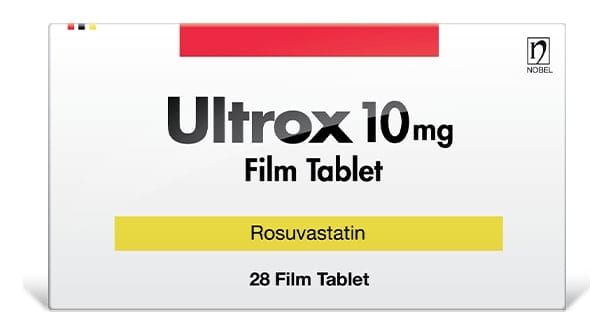

Ultrox 10 mg Film Tablet, 90 Adet

Ne için kullanılır
KT · Bölüm 1ULTROX 10 mg film tablet, “statinler” adı verilen gruba dahil bir ilaçtır.
ULTROX tabletler, pembe renkli, yuvarlak, bombeli, çentiksiz film kaplı tabletlerdir. 14, 28 ve 90 tablet içeren blister ambalajlarda piyasaya verilir.
Doktorunuz tarafından reçetenize ULTROX yazılmıştır; çünkü:
• Yüksek kolesterol düzeylerine sahipsiniz. Yani, kalp krizi veya inme riski taşıyorsunuz. ULTROX 10 mg, erişkinlerde, ergenlerde ve 6 yaşında ya da daha büyük olan çocuklarda yüksek kolesterolü tedavi etmek için kullanılır.
• Kolesterol düzeylerinizi düzeltmek için beslenme şeklini değiştirmeniz ve daha fazla egzersiz yapmanız yeterli olmadığından dolayı bir statin (kolesterol düşürücü ilaç) almanız önerilmiştir. ULTROX aldığınız sürece, kolesterol düşürücü beslenme diyetinize ve egzersizlerinize devam etmelisiniz.
veya
• Kalp krizi geçirme, inme veya ilişkili sağlık problemleri riskinizi artıran diğer faktörlere sahipsiniz.
Kalp krizi, inme veya diğer sorunlar ateroskleroz olarak adlandırılan bir hastalıktan kaynaklanabilir. Aterosklerozun nedeni damarlarınızda yağlı artıkların birikmesidir.
ULTROX kullanmaya devam etmeniz neden önemlidir?
ULTROX, kanda bulunan, lipid adı verilen, en yaygını kolesterol olan yağ maddelerinin düzeylerini düzeltmek için kullanılır.
Kanda bulunan kolesterolün değişik tipleri vardır. “Kötü” kolesterol (LDL-K) ve “iyi” kolesterol (HDL-K).
• ULTROX “kötü” kolesterolü düşürür, “iyi” kolesterolü yükseltir. • Vücudunuzun “kötü” kolesterol üretmesini önlemek için vücudunuza yardımcı olarak etki eder. Aynı zamanda vücudunuzun “kötü” kolesterolü kanınızdan uzaklaştırma kabiliyetini artırır.
İnsanların çoğu, yüksek kolesterolden etkilenmediklerini düşünürler, çünkü bu durum nedeniyle bir belirti hissetmezler. Ama bu durum tedavi edilmezse, yağlı artıklar kan damarlarınızın çeperlerinde birikir ve damarlarınızı daraltır.
Bazen, daralan bu damarlar tıkanabilir. Kalbe veya beyine kan gitmezse, kalp krizi veya inme ortaya çıkabilir. Kolesterol düzeylerinizi düşürerek, kalp krizi geçirme, inme veya ilişkili sağlık problemleri riskinizi azaltmış olursunuz.
Kolesterolünüz istenen düzeye gelse bile ULTROX almaya devam etmeniz gerekir. Çünkü ULTROX, kolesterol düzeyinizin yeniden yükselmesine ve bunların damarlarınızda birikmesine engel olur. Ancak, doktorunuz ilacınızı kesmenizi söylerse veya hamile kalırsanız ULTROX kullanmamalısınız.